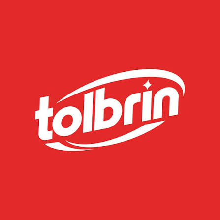

Somos la distribuidora encargada de llevar los productos Tolbrín a los hogares, bodegas y negocios de Barranca y todo el Norte Chico de Lima. Operamos formalmente como Distribuidora de Productos Tolbrín S.R.L., acercando una línea completa de limpieza del hogar con atención cercana y directa.
Tolbrín es una marca peruana pensada para el uso diario: soluciones prácticas y de alta rotación para cocina, baño, superficies y vajilla, respaldadas por una identidad que se reconoce a la distancia por su rojo y blanco.
Distribuimos directamente la línea oficial Tolbrín, sin intermediarios.
Operamos con RUC 20614506807, como Distribuidora de Productos Tolbrín S.R.L.
Llegamos a Barranca y a los distritos y negocios de la zona.
Un asesor real te acompaña en cada pedido, sin catálogos con precios fijos.